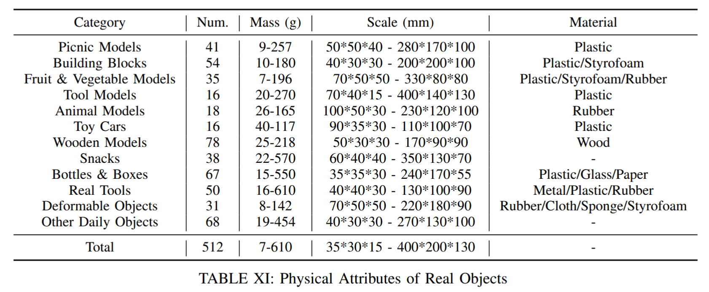

Objects Used for Evaluation
Our method is evaluated on a diverse set of objects with various materials, shapes, and masses, which are all unseen during training.
500+ real-world objects used in our experiments.

The ability to robustly grasp a variety of objects is essential for dexterous robots. In this paper, we present a framework for zero-shot dynamic dexterous grasping using single-view visual inputs, designed to be resilient to various disturbances. Our approach utilizes a hand-centric object shape representation based on dynamic distance vectors between finger joints and object surfaces. This representation captures the local shape around potential contact regions rather than focusing on detailed global object geometry, thereby enhancing generalization to shape variations and uncertainties. To address perception limitations, we integrate a privileged teacher policy with a mixed curriculum learning approach, allowing the student policy to effectively distill grasping capabilities and explore for adaptation to disturbances. Trained in simulation, our method achieves success rates of 97.0% across 247,786 simulated objects and 94.6% across 512 real objects, demonstrating remarkable generalization. Quantitative and qualitative results validate the robustness of our policy against various disturbances.
@article{zhang2025RobustDexGrasp,
title={{RobustDexGrasp}: Robust Dexterous Grasping of General Objects from Single-view Perception},
author={Zhang, Hui and Wu, Zijian and Huang, Linyi and Christen, Sammy and Song, Jie},
journal={arXiv preprint arXiv:2504.05287},
year={2025}
}